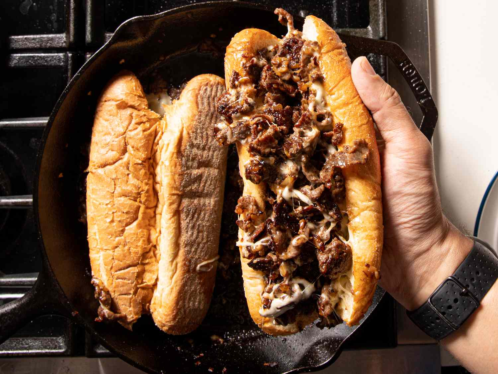

Description
The combination of thin sliced, juicy ribeye steak and melty-gooey cheese all wrapped up in a soft and warm hoagie roll is seriously hard to beat!
This recipe uses grass-fed Wagyu Ribeye thinly sliced, a slightly warmed (but not toasted!) traditional hoagie roll, and classic buffalo sauce.
Ingredients
- 1 1/2 pounds of thin sliced ribeye steak
- 2 tablespoons unsalted butter
- 1 1/2 tablespoons vegetable oil
- 5 slices of american cheese
- 3 hoagie rolls
- salt and pepper to taste
Steps
- Generously season sliced ribeye with salt and pepper. Set aside
- Place a large skillet over medium heat and melt butter.
- Turn heat up to medium-high and add oil.
- Add beef to skillet and sear until just barely cooked through, 3 to 4 minutes.
- Place 3 slices of american on top of the beef mixture, add 1-2 tablespoons water to the side of the skillet and cover for 1 minute, allowing the steam to melt the cheese.
Stir mixture together, top with remaining slices of american, add 2 more tablespoons water to side of skillet and cover for another minute to melt cheese. - Uncover and remove from heat.
- Top each hoagie roll and top with 1/3 of the beef mixture. Serve immediately.